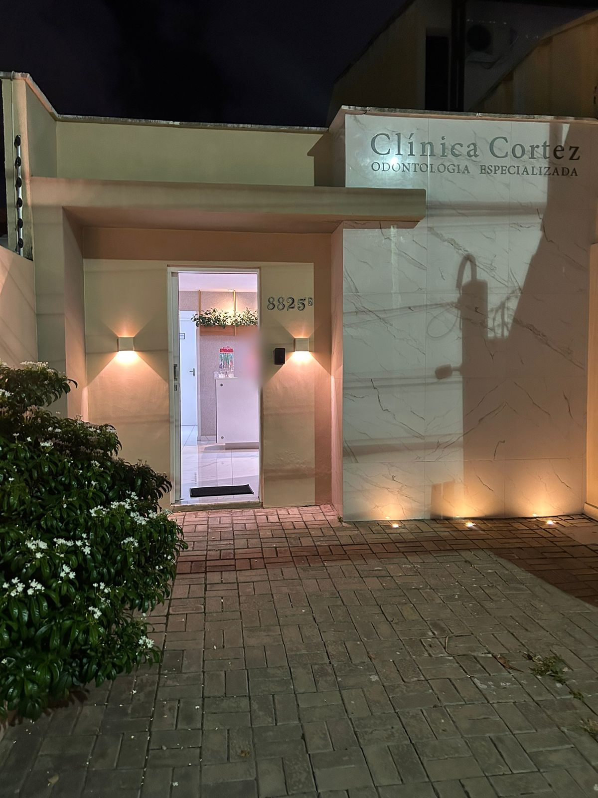
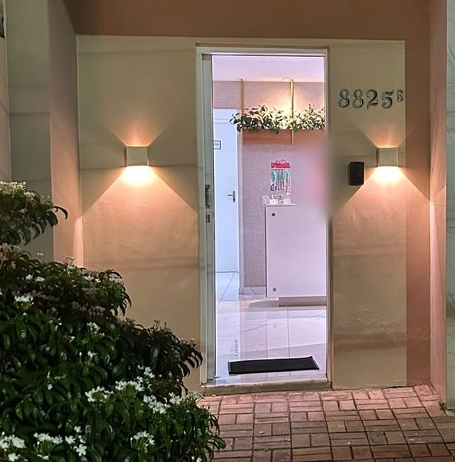
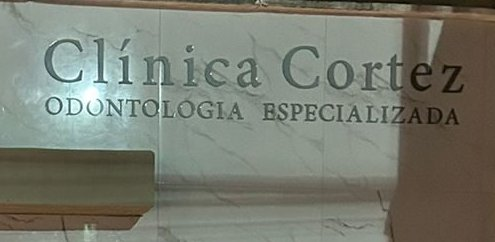

Ortodontia
Um paciente conta que fez aqui o tratamento ortodôntico, com todos os procedimentos explicados.
citado em avaliaçãotipos de aparelho a confirmar

Odontologia especializada na R. Cabo de São Roque. Consulta marcada pelo WhatsApp, de segunda a sábado.
Dados da ficha da clínica no Google Maps, consultados em outubro de 2026.

A Clínica Cortez atende em Ponta Negra, numa casa de fachada em mármore branco. Nas avaliações do Google, os pacientes falam de um atendimento pessoal e gentil, da recepção ao consultório, e de procedimentos explicados com calma.
Texto de apresentação sugerido a partir das avaliações públicas a confirmar com a clínica
Paciente que se diz traumatizada com dentista conta que ali se sente acolhida.
Um paciente conta que todos os procedimentos foram explicados a ele.
Uma paciente conta que passou a levar as crianças e o esposo também.
Ortodontia e atendimento à família aparecem nas avaliações dos pacientes. A lista completa de especialidades entra aqui com a clínica.
Um paciente conta que fez aqui o tratamento ortodôntico, com todos os procedimentos explicados.
Adultos e crianças na mesma clínica: uma paciente conta que passou a levar os filhos e o esposo.
Espaço para os tratamentos estéticos que a clínica oferece.
A placa diz “odontologia especializada”. Aqui entram as especialidades da equipe.
A conversa começa no WhatsApp da clínica, no mesmo número da ficha do Google.
No +55 84 99856-5210. Conte o que você precisa, sem pressa.
Segunda a quarta das 8h às 18h30, quinta e sexta em dois turnos, sábado das 8h ao meio-dia.
R. Cabo de São Roque, 8825B. A placa de mármore na fachada indica a entrada.
“Atendimento excelente: pessoal, gentil e Cortez desde a recepção ao consultório. Dra. Juliana é confiável, técnica e muito delicada ao atender. Sou traumatizada com dentista desde criança, não aceito qualquer um… mas nesta clínica eu me sinto acolhida. Passei a levar minhas crianças e meu esposo também.”
“Encontrar uma clínica odontológica em que podemos confiar de verdade faz toda a diferença, e foi exatamente isso que encontrei aqui. Desde a primeira consulta, fui acolhida com muito carinho, respeito e profissionalismo. Cada atendimento me transmite segurança e tranquilidade, pois percebo o cuidado genuíno que toda a equipe tem com os pacientes.”
“Clínica super agradável, atendimento de excelência desde a recepção até o atendimento. Fui atendido pela Dra. Juliana Cortez, uma dentista super competente, explicou todos os procedimentos, passou total confiança […] Se precisa de uma ortodontista, podem procurar a clínica. Confio de olhos fechados.”
Avaliações públicas da ficha no Google Maps, com o primeiro nome de quem escreveu. […] indica trecho omitido. Passam sozinhas; toque ou passe o mouse para parar.
Ver todas no GoogleFoto, formação e registro no CRO-RN de cada profissional da clínica.
Especialidade · CRO-RN a confirmar
Especialidade · CRO-RN a confirmar
Especialidade · CRO-RN a confirmar
Pelo WhatsApp +55 84 99856-5210. É o mesmo número da ficha da clínica no Google.
Sim, das 8h ao meio-dia. De segunda a sexta o atendimento vai até 18h30 (quinta até 19h).
Nas avaliações, uma paciente conta que passou a levar os filhos à clínica. A partir de que idade e com qual especialista a confirmar
Convênios e formas de pagamento a confirmar com a clínica

| Segunda a quarta | 8h às 18h30 |
|---|---|
| Quinta | 8h às 12h · 13h às 19h |
| Sexta | 8h às 12h · 13h às 18h30 |
| Sábado | 8h às 12h |
| Domingo | Fechado |
Horários conforme a ficha da clínica no Google Maps.